ACL 2026 · Findings Code-Driven Multimodal & Structured-Artifact Generation
Code is the medium through which large language models generate structured artifacts: charts, scientific figures, vector graphics, CAD models, 3D scenes, and hardware designs are all produced by writing programs. In this regime single-pass inference is brittle, because the compiler, renderer, or simulator that decides whether the artifact exists is invisible to the model. We present PairCoder, which grounds review in the toolchain and realizes it as two-agent pair programming: a Driver agent writes the program, a Navigator agent reviews it against verification evidence (diagnostics, execution results, and renderings of the current artifact beside the target), and the two switch roles when errors persist. Across 17 public benchmarks and seven models from three vendors, PairCoder improves essentially every benchmark whose artifact is verifiable, on full official metric suites rather than execution alone (for example, Blender scene executability 0.20→0.78; TikZ compile rate up 10 to 30 points on every model), at 2.9 to 9.2 times single-model cost (about 7 times overall). The improvements concentrate where the toolchain provides an informative oracle and the baseline leaves headroom, and the method ties or mildly regresses where the oracle is weak, so we frame pair programming as a reliable recipe for code-driven generation of structured data and multimodal content wherever a trustworthy verification oracle exists.
A minimal two-agent loop that turns code-driven generation into a toolchain-verified dialogue. The Driver writes and revises the program; the Navigator reviews each candidate against concrete verification evidence; control of the keyboard follows the diagnosis.
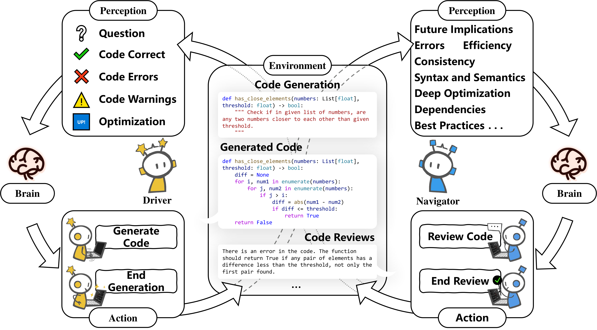
The Driver generates and revises while the Navigator reviews, each under a role-specific system prompt over the shared task and memory, preserving two genuinely different perspectives on the same code.
Each candidate is compiled, executed, or rendered by the benchmark's own toolchain. The evidence — diagnostics, test outcomes, and a rendering of the artifact beside the target — is attached to the review. The Navigator must cite a concrete error or accept with [NOERROR], which prevents churn on already-correct programs.
Persistent errors swap the roles so the agent that diagnosed the fault repairs it. An exhausted budget returns the candidate with the best verified quality rather than the last one.
Each cell is single model → PairCoder at gpt-5.4 (thinking disabled). PairCoder improves every official metric on all seven multimodal benchmarks — executability, visual similarity, and geometry alike.
| Benchmark | Metric | Single | PairCoder |
|---|---|---|---|
| DaTikZ (60) | valid render ↑ | 0.717 | 0.967 |
| SSIM / CLIP / DINO ↑ | .363/.566/.530 | .512/.770/.698 | |
| Plot2Code (132) | execution rate ↑ | 0.962 | 0.977 |
| SSIM / CLIP ↑ | .476/.916 | .495/.920 | |
| PandasPlotBench (175) | execution rate ↑ | 0.966 | 0.994 |
| SSIM / CLIP ↑ | .567/.909 | .610/.944 | |
| ChartMimic (60) | execution rate ↑ | 0.917 | 0.983 |
| SSIM ↑ | .533 | .582 | |
| StarVector (60) | render rate ↑ | 0.900 | 1.000 |
| SSIM / CLIP / DINO ↑ | .776/.859/.820 | .873/.954/.906 | |
| GenCAD-Code (60) | execution rate ↑ | 0.867 | 0.983 |
| Chamfer (agg.) ↓ | 0.259 | 0.155 | |
| 3DCodeBench (60) | executability ↑ | 0.433 | 0.783 |
| SigLIP-2 / DINO (agg.) ↑ | .263/.129 | .842/.512 | |
| Chamfer (agg.) ↓ | 4.66 | 1.66 |
Aggregate scores count non-executing generations as worst case. Green marks a PairCoder improvement.
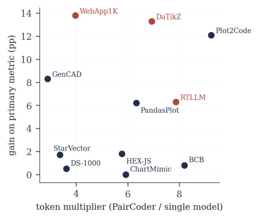
gpt-5.4-mini. Per-benchmark token multiplier against gain on the primary metric. Spend concentrates where it converts — the largest multipliers coincide with the largest gains.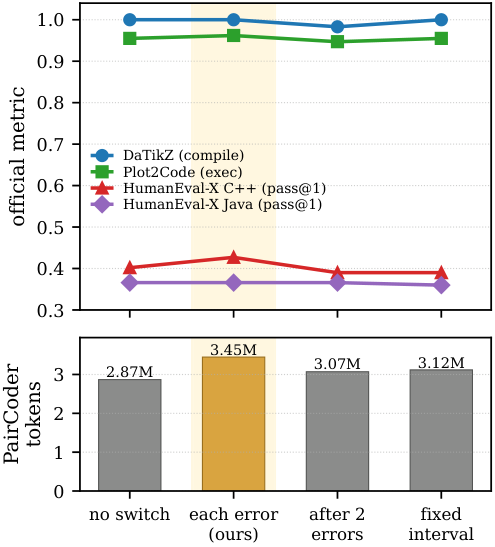
The full main table, interactive: 17 benchmarks × 7 models from 3 vendors, single model versus PairCoder. The default view shows every number at once, color-coded by improvement; switch to a chart to drill into one benchmark or one model.
For each domain: target / reference, single-model baseline, and PairCoder side by side. The benchmarks rotate automatically — hover to pause, or click a tab to take over.
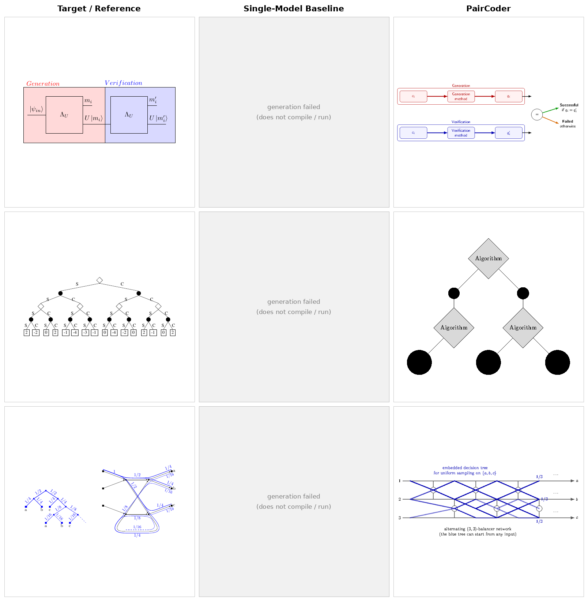
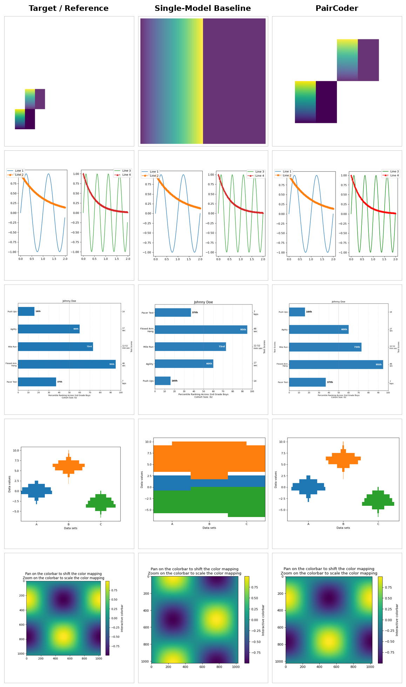
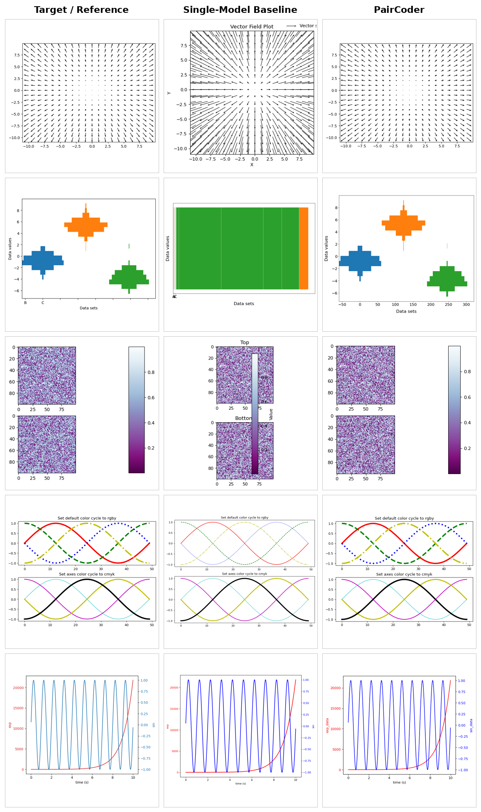
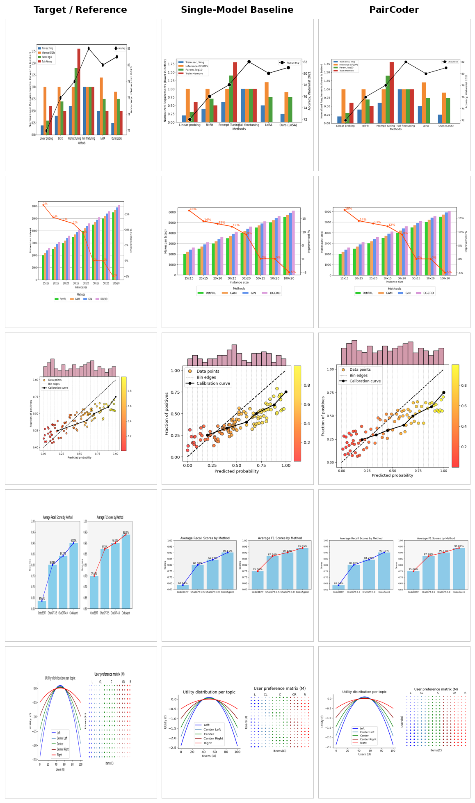
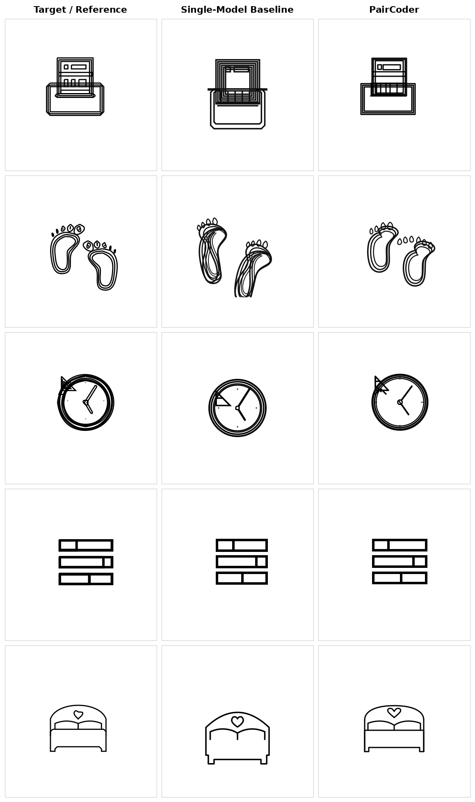
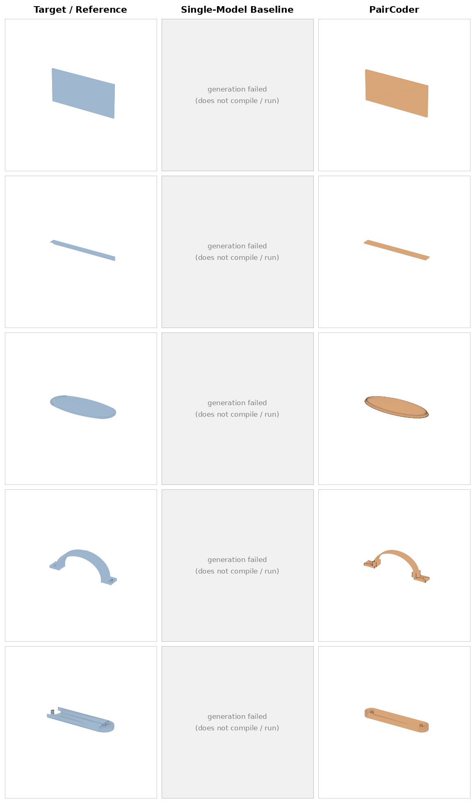
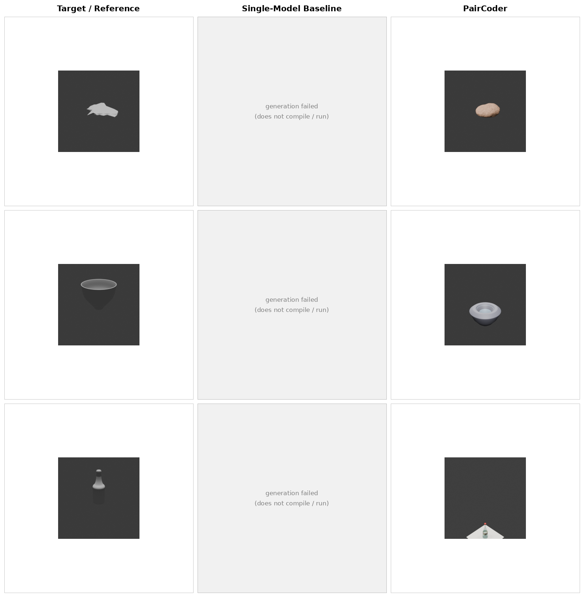
The same tasks rendered across models from three vendors, baseline versus PairCoder. The headline transfers: domains with a strong toolchain signal improve on nearly every applicable model.
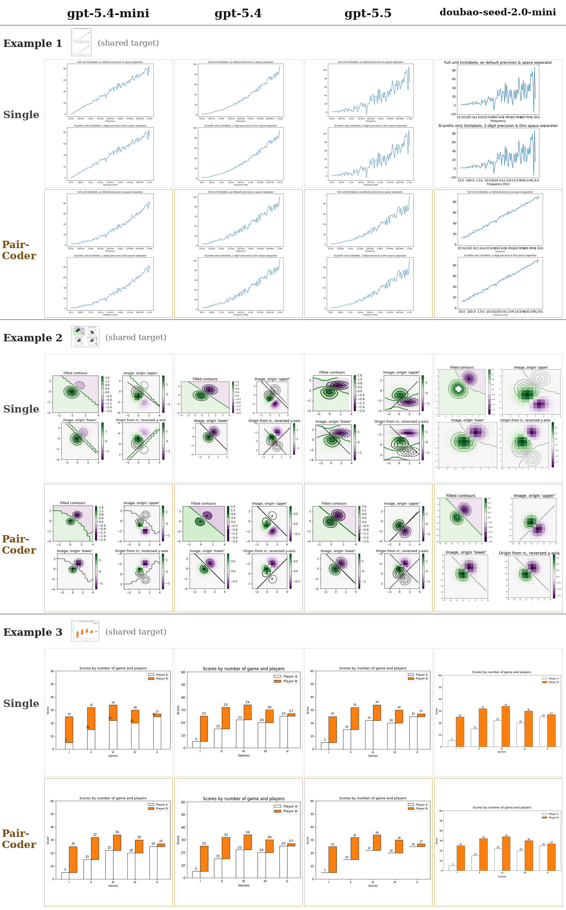
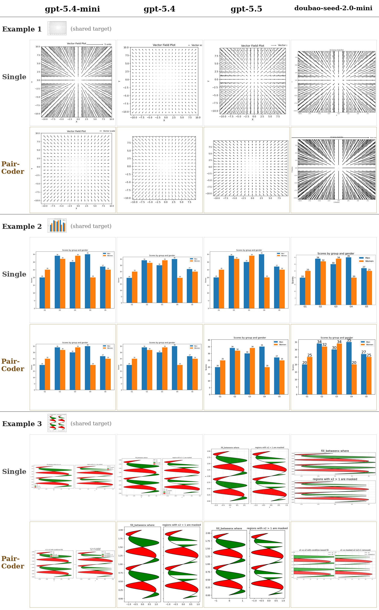
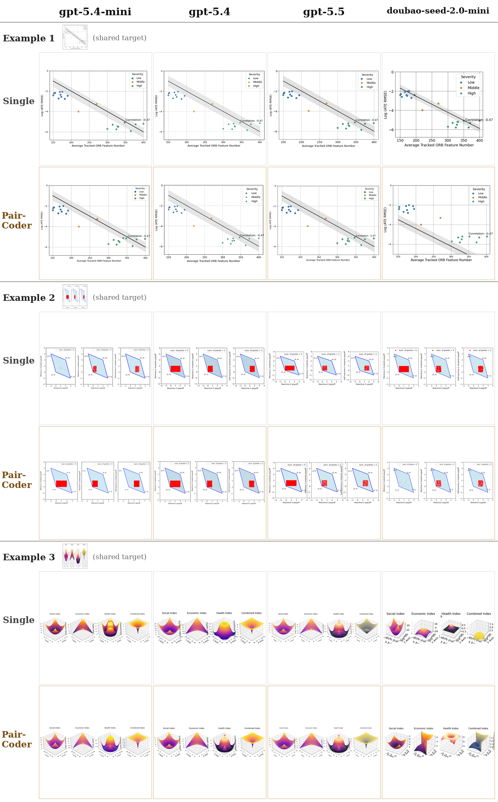
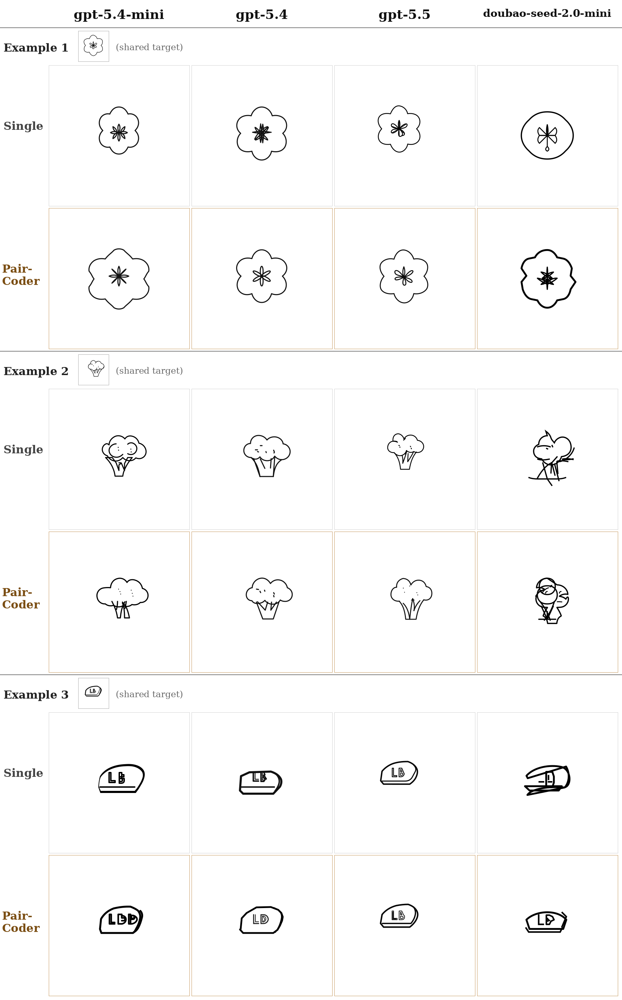
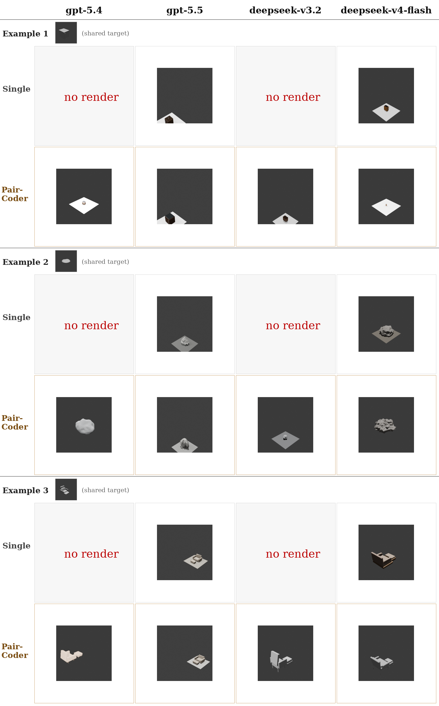
PairCoder++ extends our ACL 2026 Findings paper, PairCoder: Pair Programming-Inspired Two-Agent Collaboration for Code Generation. Please cite the published paper:
@inproceedings{chen2026paircoder,
title = {PairCoder: Pair Programming-Inspired Two-Agent
Collaboration for Code Generation},
author = {Chen, Junhao and Li, Xiang and Xu, Yibin and Cui, Yuehan and
Weng, Fangsheng and Zhao, Hao and Ma, Fei and Tian, Qi},
booktitle = {Findings of the Association for Computational Linguistics: ACL 2026},
pages = {3043--3058},
year = {2026}
}